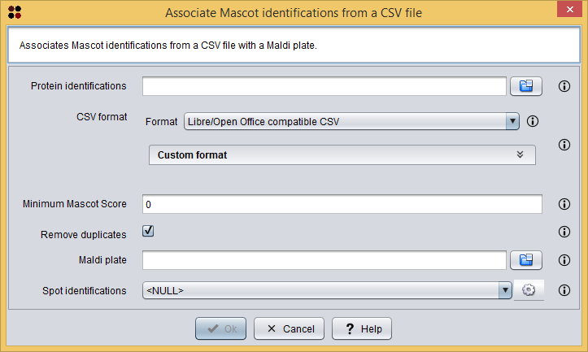
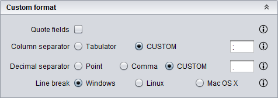

This operation allows you to associate Mascot identifications from a CSV file with a Maldi plate.
This operation has been designed to effectively manage experiments involving several Maldi plates and different sets of Mascot identifications. This way, instead of loading them separately and associating them in the momment of analyzing Spots data in the Integrated analysis view, users can associate all Maldi plates and Mascot identifications once, save them as a CSV file and then reusing this associated set of Spot Mascot identifications.
Usage
You can execute this operation by clicking the menu option Operations/Associate Mascot identifications from a CSV file.
A dialog will appear allowing you to select the source CSV Mascot identifications file and MPL Maldi plate file. As you can see in the following image, this dialog requires you to provide the following information:

Associate Mascot identifications dialog
As commented above, you can customize the CSV format by selecting the Custom format option. When you select this option, the following custom format panel will be shown in the dialog. The options included in this panel will allow you to customize the CSV format:

Custom CSV panel
After clicking the Ok button, the associated identifications are added as a Spot Mascot identifications datatype to the clipboard and automatically opened in the Spot Mascot identifications table.